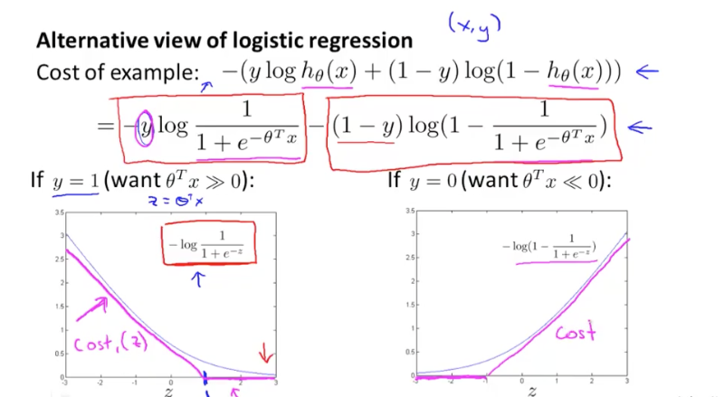

<!DOCTYPE html>
<html>
<head>
    <!-- sumome script -->
    <script src="//load.sumome.com/" data-sumo-site-id="83c6fe148d6e422cc398ab2bac0849f76b21dea9ea30a8f082131bbb08206eff" async="async"></script>

    <!-- [[! Document Settings ]] -->
    <meta charset="utf-8" />
    <meta http-equiv="X-UA-Compatible" content="IE=edge" />

    <!-- [[! Page Meta ]] -->
    <title>Stanford Machine Learning Week 7 review</title>
    <meta name="description" content="7 a.m. in the morning - The coding story begins here." />

    <meta name="HandheldFriendly" content="True" />
    <meta name="viewport" content="width=device-width, initial-scale=1.0" />

    <link rel="shortcut icon" href="/assets/images/favicon.ico" >

    <!-- [[! Styles'n'Scripts ]] -->
    <link rel="stylesheet" type="text/css" href="/assets/css/screen.css" />
    <link rel="stylesheet" type="text/css"
          href="//fonts.googleapis.com/css?family=Merriweather:300,700,700italic,300italic|Open+Sans:700,400" />
    <link rel="stylesheet" type="text/css" href="/assets/css/syntax.css" />

    <!-- [[! highlight.js ]] -->
    <link rel="stylesheet" href="//cdnjs.cloudflare.com/ajax/libs/highlight.js/9.3.0/styles/default.min.css">
    <style>.hljs { background: none; }</style>
    <script src="//cdnjs.cloudflare.com/ajax/libs/highlight.js/9.3.0/highlight.min.js"></script>
    <script>hljs.initHighlightingOnLoad();</script>

    <!-- [[! Ghost outputs important style and meta data with this tag ]] -->
        <link rel="canonical" href="/" />
    <meta name="referrer" content="origin" />
    <link rel="next" href="/page2/" />

    <meta property="og:site_name" content="7 a.m. in the morning" />
    <meta property="og:type" content="website" />
    <meta property="og:title" content="7 a.m. in the morning" />
    <meta property="og:description" content="The coding story begins here." />
    <meta property="og:url" content="/" />
    <meta property="og:image" content="/assets/images/cover-write.jpg" />

    <meta name="twitter:card" content="summary_large_image" />
    <meta name="twitter:title" content="7 a.m. in the morning" />
    <meta name="twitter:description" content="The coding story begins here." />
    <meta name="twitter:url" content="/" />
    <meta name="twitter:image:src" content="/assets/images/cover-write.jpg" />

    <script type="application/ld+json">
{
    "@context": "http://schema.org",
    "@type": "Website",
    "publisher": "Finding The Way Home",
    "url": "/",
    "image": "/assets/images/cover-write.jpg",
    "description": "The coding story begins here."
}
    </script>

    <meta name="generator" content="Jekyll 3.0.0" />
    <link rel="alternate" type="application/rss+xml" title="7 a.m. in the morning" href="/feed.xml" />


</head>
<body class="home-template nav-closed">

    <div class="nav">
    <h3 class="nav-title">Menu</h3>
    <a href="#" class="nav-close">
        <span class="hidden">Close</span>
    </a>
    <ul>
        <li class="nav-home " role="presentation"><a href="/">Home</a></li>
        <li class="nav-algorithm " role="presentation"><a href="/tag/algorithm">Algorithm</a></li>
        <li class="nav-java " role="presentation"><a href="/tag/java">Java</a></li>
        <li class="nav-python " role="presentation"><a href="/tag/python">Python</a></li>
        <li class="nav-machine-learning " role="presentation"><a href="/tag/machine-learning">Machine Learning</a></li>
        <li class="nav-productivity " role="presentation"><a href="/tag/productivity">Productivity</a></li>
        <li class="nav-author " role="presentation"><a href="/author/kewei">Author</a></li>
        <li class="nav-about " role="presentation"><a href="/about">About</a></li>
    </ul>
    <a class="subscribe-button icon-feed" href="/feed.xml">Subscribe</a>
</div>
<span class="nav-cover"></span>


    <div class="site-wrapper">

        <!-- [[! Everything else gets inserted here ]] -->
        <!-- < default -->

<!-- The comment above "< default" means - insert everything in this file into -->
    <!-- the [body] of the default.hbs template, which contains our header/footer. -->

<!-- Everything inside the #post tags pulls data from the post -->
<!-- #post -->

<header class="main-header post-head " style="background-image: url(/assets/images/cover-s-ml-w7.png) ">
    <nav class="main-nav  overlay  clearfix">
        <a class="blog-logo" href="/"></a>
        
            <a class="menu-button icon-menu" href="#"><span class="word">Menu</span></a>
        
    </nav>
</header>

<main class="content" role="main">

    <article class="post machine-learning">

        <header class="post-header">
            <h1 class="post-title">Stanford Machine Learning Week 7 review</h1>
            <section class="post-meta">
            <!-- <a href='/'>Kewei Shang</a> -->
            <time class="post-date" datetime="2016-07-03">03 Jul 2016</time>
                <!-- [[tags prefix=" on "]] -->
                 
                on 
                
                    
                       <a href='/tag/machine-learning'>Machine-learning</a>
                       
                
                
            </section>
        </header>

        <section class="post-content">
            
            <p>This week’s machine learning course is about SVM, which is a very important machine learning algorithm.</p>

<h5 id="what-is-svm-support-vector-machine">What is SVM (Support Vector Machine)?</h5>

<p><strong>SVM</strong> is like logistical regression. It has the same way to solve z, which is ϴ’*X.</p>

<p>The difference is the cost function. SVM’s cost function is two simple straight lines for y == 1; and symmetrically, two other straight lines for y == 0.</p>

<p></p>

<p>This is computationally more efficient. It also makes effort to make θ’<em>x &gt;=1 when y = 1 (not merely making θ’</em>x &gt;=0 ), and make tθ’<em>x &lt;=-1 when y = 0 (not merely making θ’</em>x &lt;0).</p>

<p>By solving the minimization of (this modified version of) cost function SVM, thanks to <strong>Large Margin</strong> Technique, we can draw a linear line (if features are not polynomial), we will get the final ϴ, separating the positives (h=1) and negatives(h=0) for <strong>classification</strong> problem.</p>

<h5 id="what-is-large-margin">What is Large Margin?</h5>

<p>With <strong>Large Margin</strong>, we can draw a line that separates the positive points from the negative points. Large Margin guaranties to have a large minimum length of projection from each point to that boundary line.</p>

<h5 id="what-is-vector-inner-product">What is Vector Inner Product?</h5>

<p>If we have two vectors: u = [u1 u2] v = [v1 v2]. One way to calculate the inner product is u’<em>v, which is u1</em>v1 + u2*v2.</p>

<p>Another way to calculate the inner product is based on geometry:
The normal or (euclidean) length of vector u, ||u|| is sqrt(u1^2 + u2^2). It’s like when we project u1, u2 into axis x (x = u1), and axis y (y = u2), then calculate the Pythagoras theorem. Draw vector v in the axis x and axis y, do a orthogonal projection from v to u and get the length of p (from the origin (0,0) to the orthogonal point), p is signed and could be negative, finally the inner production = p*||u||.</p>

<p></p>

<h5 id="apply-vector-inner-product-to-minimise-the-cost-function-to-get-the-large-margin-decision-boundary">Apply Vector Inner Product to minimise the cost function, to get the Large Margin Decision Boundary</h5>

<p>We can rewrite the cost function of SVM in a way that uses Vector Inner Product. In order to minimise the cost function, Vector Inner Product chooses a decision boundary that has the largest margin.</p>

<p></p>

<p></p>

<h5 id="what-are-kernels">What are Kernels?</h5>

<p>We use a kernel in order to develop complex nonlinear classifiers. Without a kernel (sometimes we call it a linear kernel), we can only develop linear classifiers. <strong>SVM is about the cost function, whereas Kernel is about the hypothesis function.</strong></p>

<h5 id="how-to-use-kernels-in-a-hypothesis-function">How to use Kernels in a hypothesis function?</h5>

<p>Without kernel, we would write a polynomial hypothesis function. We can replace the polynomial hypothesis function x’s by f’s. The f’s are the result of kernel. <strong>Gaussian Kernel</strong> is the most popular kernel that calculates the similarity of two vectors; it returns 1 when two vectors are very similar, and returns 0 when two vectors are very different. Each training example is a n-dimensional vector. We have m vectors in the training set. We can learn parameters θ so that when a vector is similar to certain other vectors, the hypothesis function &gt; 0.</p>

<p></p>

<p></p>

<p></p>

<h5 id="svm-logistic-regression-or-neural-network">SVM, Logistic Regression, or Neural Network?</h5>

<p>It’s not alway obvious to make a choice of the learning algorithm when solving classification problem. Here’s a recommended best practice guide:</p>

<p></p>

<h5 id="questions">Questions</h5>

<p>Does it change the hypothesis function of SVM compared to the hypothesis function of Logistic Regression? Why?</p>

<p>It seems - to be verified - that the hypothesis function of SVM becomes:
h = 1, when theta-transpose<em>x &gt;=0
h = 0, when theta-transpose</em>x &lt;0</p>


        </section>

        <footer class="post-footer">

            <!-- Everything inside the #author tags pulls data from the author -->
            <!-- #author-->

            
            <figure class="author-image">
                <a class="img" href="/author/kewei" style="background-image: url(/assets/images/casper.png)"><span class="hidden">'s Picture</span></a>
            </figure>
            

            <section class="author">
                <h4><a href="/author/kewei">Kewei Shang</a></h4>
                
                
                    <p> Software engineer, runner, reader</p>
                
                <div class="author-meta">
                    <span class="author-location icon-location"> Paris, France</span> 
                    <span class="author-link icon-link"><a href="http://keweishang.github.io/"> github.com/keweishang/</a></span> 
                </div>
            </section>

            <!-- /author  -->

            <section class="share">
                <h4>Share this post</h4>
                <a class="icon-twitter" href="http://twitter.com/share?text=Stanford Machine Learning Week 7 review&amp;url=http://keweishang.github.io/stanford-ml-w7"
                    onclick="window.open(this.href, 'twitter-share', 'width=550,height=235');return false;">
                    <span class="hidden">Twitter</span>
                </a>
                <a class="icon-facebook" href="https://www.facebook.com/sharer/sharer.php?u=http://keweishang.github.io/stanford-ml-w7"
                    onclick="window.open(this.href, 'facebook-share','width=580,height=296');return false;">
                    <span class="hidden">Facebook</span>
                </a>
                <a class="icon-google-plus" href="https://plus.google.com/share?url=http://keweishang.github.io/stanford-ml-w7"
                   onclick="window.open(this.href, 'google-plus-share', 'width=490,height=530');return false;">
                    <span class="hidden">Google+</span>
                </a>
            </section>
            
            <!-- Add Disqus Comments -->
            
            
        </footer>

    </article>

</main>

<aside class="read-next">

    <!-- [[! next_post ]] -->
    
        <a class="read-next-story " style="background-image: url(/assets/images/cover-s-ml-w8.png)" href="/stanford-ml-w8">
            <section class="post">
                <h2>Stanford Machine Learning Week 8 review</h2>
                <p>This week's machine learning course is about Unsupervised Learning. Supervised Learning is to learn the...</p>
            </section>
        </a>
    
    <!-- [[! /next_post ]] -->
    <!-- [[! prev_post ]] -->
    
        <a class="read-next-story prev " style="background-image: url(/assets/images/cover-boost-brain.jpeg)" href="/boost-brain">
            <section class="post">
                <h2>7 ways to boost your brain productivity</h2>
                <p>Sandra Bond Chapman met an autistic boy one day, and was fascinated by his problem...</p>
            </section>
        </a>
    
    <!-- [[! /prev_post ]] -->
</aside>

<!-- /post -->


        <footer class="site-footer clearfix">
          <section class="copyright"><a href="/">7 a.m. in the morning</a> &copy; 2017</section>
        </footer>
    </div>
    <!-- [[! Ghost outputs important scripts and data with this tag ]] -->
    <script type="text/javascript" src="https://code.jquery.com/jquery-1.11.3.min.js"></script>
    <!-- [[! The main JavaScript file for Casper ]] -->
    <script type="text/javascript" src="/assets/js/jquery.fitvids.js"></script>
    <script type="text/javascript" src="/assets/js/index.js"></script>

    <!-- Add Google Analytics  -->
        <!-- Google Analytics Tracking code -->
     <script>
	    (function(i,s,o,g,r,a,m){i['GoogleAnalyticsObject']=r;i[r]=i[r]||function(){
	    (i[r].q=i[r].q||[]).push(arguments)},i[r].l=1*new Date();a=s.createElement(o),
	    m=s.getElementsByTagName(o)[0];a.async=1;a.src=g;m.parentNode.insertBefore(a,m)
	    })(window,document,'script','//www.google-analytics.com/analytics.js','ga');

	    ga('create', 'UA-69281367-1', 'auto');
	    ga('send', 'pageview');

     </script>   
</body>
</html>
